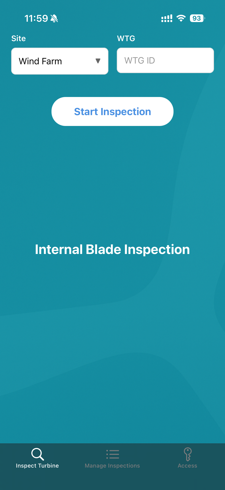
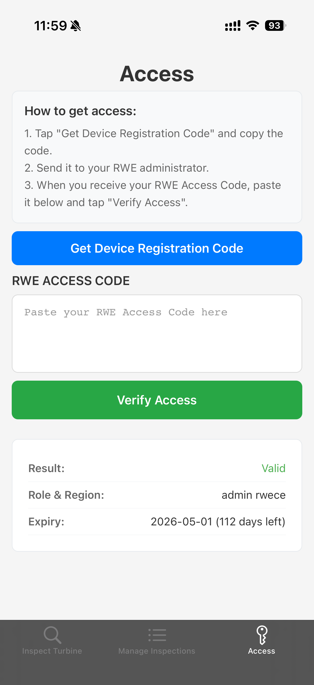
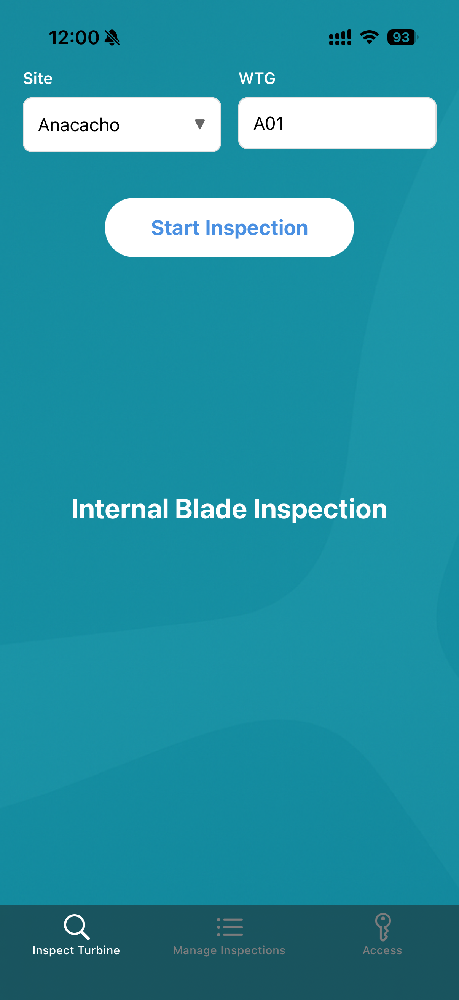
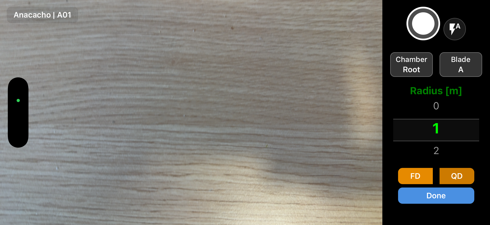
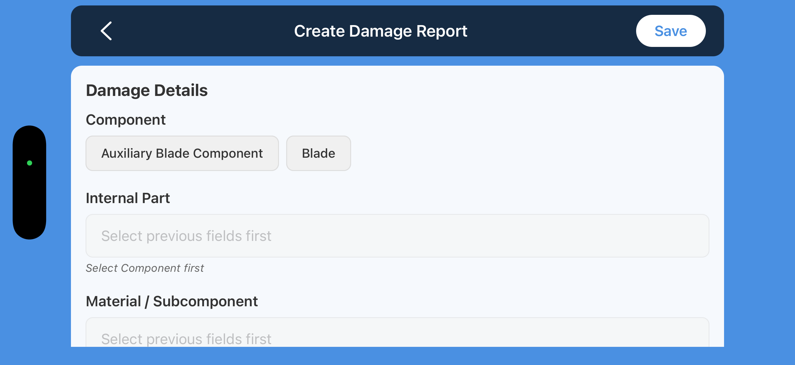
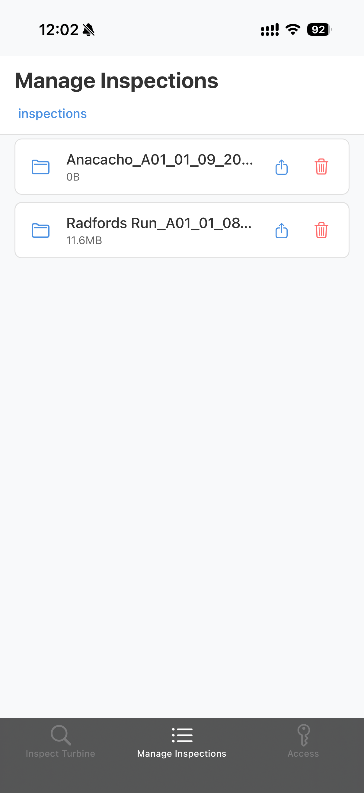
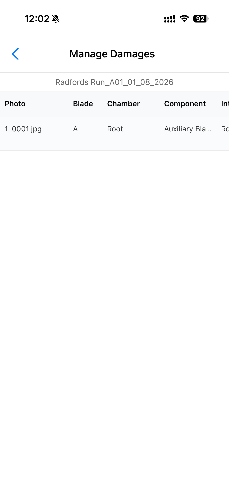
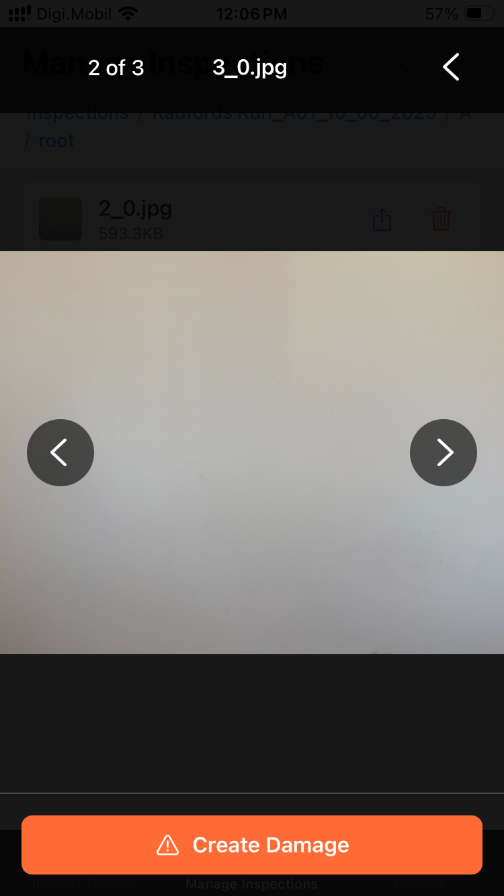

BladePeek
BladePeek is a field inspection app designed to streamline wind turbine blade inspections. It helps technicians document, manage, and export inspection findings efficiently by capturing photos and structured damage metadata.
Intended audience: RWE employees and authorized contractors.
Access: BladePeek requires an RWE Access Code to enable inspection features. Access codes are issued by RWE to authorized users. No purchases are required or available in the app.
App Workflow Overview
-
Landing Screen & Tabs: The main screen displays the three app tabs: Inspect Turbine, Manage Inspections, and Access.
Screenshot: Main Screen

-
Access Setup: The user visits the Access tab and taps Get Device Registration Code to retrieve a code for this installation. This code is provided to the RWE administrator/support contact to issue an RWE Access Code.
Screenshot: Access Tab

-
Enter RWE Access Code: When you receive the RWE Access Code, paste it and tap Verify Access to enable inspection features.
-
Starting an Inspection: In the Inspect Turbine tab, the user selects a wind farm and WTG ID. If the site has specific requirements, they are shown in a popup before inspection begins.
Screenshot: Site Selection

-
Camera View: The camera interface is used to take inspection photos. The UI includes:
- Top Left: Site and WTG ID
- Right Side (Top to Bottom):
• Shutter button
• Flash toggle
• Blade selector
• Chamber selector
• Radius selector
• FD (opens full damage form)
• QD (takes quick damage picture)
• Done (returns to home)
Screenshot: Camera View

-
Damage Form: Complete required fields such as component, subcomponent, and measurements, then save.
Screenshot: Damage Form

-
Manage Inspections: In this tab, the user sees a list of all inspections performed. Each inspection can be deleted or exported.
Screenshot: Manage Inspections

-
Manage Damages: Inside a selected inspection, the user can click Manage Damages to edit or delete previous damage reports.
Screenshot: Manage Damage Table

-
Review Pictures: Users can browse pictures taken and also create new damage entries from them.
Screenshot: Inspection Picture View

Support
For help, bug reports, or access requests, contact:
guillermo.lozano@rwe.com.
BladePeek is intended for use by trained wind turbine technicians as part
of RWE’s inspection procedures. It does not replace safety training,
work instructions, or engineering judgement. Always follow your site
safety rules, work instructions, and lockout/tagout procedures.